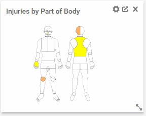

to change the number of injuries represented by each color.
to change the number of injuries represented by each color.
For general information on working with Cority reports, see Generating Standard Reports.
The following reports are available:
|
Report Title |
Description |
|---|---|
|
Cal/OSHA 300/300A |
Generates California OSHA record-keeping documents: Cal/OSHA 300 Log and Cal/OSHA 300A Summary Log. |
|
Cal/OSHA 301 |
Generates the Cal/OSHA 301 report as a PDF file for a specific employee's incident |
|
Environmental Event Reporting Response Counts |
Count of responses made to Environmental event reports based on certain filters. |
|
Environmental Incident Counts by Category Safety Incident Counts by Category |
Displays a count and plots a graph of incidents by category. |
|
Environmental Incident Investigations - Stage of Completion Safety Incident Investigations - Stage of Completion |
Incomplete incidents grouped according to where they are in the approval process. |
|
Environmental Incident Root Cause Analysis Safety Incident Root Cause Analysis |
Displays a breakdown of incidents by root cause. |
|
Injury / OSHA Rates |
Annual or three-year Incident or OSHA Recordable Rates by GDDLOFB, Firm Code, or Nature of Injury, and can generate horizontal, vertical or pie chart representations. Report can be broken down by month and filtered by multiple incident-related fields. Data is limited by site security. |
|
Safety Injury Counts By Safety Classifications |
Number of injury records by various classifications, and can generate horizontal, vertical or pie chart representations. |
|
Injury Log |
Log report, similar to the OSHA 300 Log, displaying recordable, non-recordable, or all incidents. Data can be restricted to records with Lost Work days and/or Restricted Work Days. |
|
Injury/OSHA Counts |
Annual or three-year count of occupational incidents by GDDLOFB or Firm Code, and can generate horizontal, vertical or pie chart representations. The report can be filtered by multiple incident-related fields. |
|
MVA Counts |
Count of motor vehicle accidents within a specified date range. |
|
MVA Counts Year Comparisons |
Comparison of MVA occurrence counts between two years. |
|
MVA Frequency Rates |
Motor vehicle accident rates by GDDLOFB, Facility, Job Position, Shift Code, Jurisdiction or Classification; can generate horizontal or vertical chart representations. |
|
MVA Frequency Rates Year Comparisons |
Motor vehicle accident rates by GDDLOFB, Facility, Job Position, Shift Code, Jurisdiction or Classification; can generate horizontal, vertical or pie chart representations. Rate comparisons can be made between years. |
|
OSHA 300 Log |
OSHA record-keeping documents: OSHA 300 Log and OSHA 300A Summary Log. Also generates Privacy Cases Only Log displaying employee names, and Sharps Log which redacts employee name. Each establishment appears on a new page. If you enter an establishment name, that name will be printed at the top of the OSHA log; if you do not enter an establishment name, the report will use the “Firm Code”. |
|
OSHA 300 Log Privacy Cases |
OSHA 300 Log, displays only those cases that have been marked as 'Privacy Cases'. Employee names are displayed in column B. The OSHA 300A Summary Log can also be generated from this report. |
|
OSHA 300 Sharps Log |
OSHA 300 Log, displays only those cases that have been marked as 'Needlestick'. Employee names are redacted and the text 'Sharp's Case' is displayed instead in column B. The OSHA 300A Summary Log can also be generated from this report. |
|
OSHA 300 Summary |
OSHA 300A Summary Log for all cases, for 'Privacy Cases' and for 'Sharps Log' cases. Each establishment appears on a new page. Output options: • click Summary to view the report in PDF format • click Submit to view the data (and then optionally export to CSV for separate OSHA e-submission) • click Export to export the data to Excel, Word, or RTF. |
|
OSHA 301 |
OSHA 301 report as a PDF file for a specific employee's incident. This report may also be generated for a case that is not OSHA-recordable. |
|
Safety Case Detail |
Detailed information for cases generated from the Clinic Visit, Case Management or Incident modules. |
|
Safety Case Summary |
Summary information for cases within a Clinic Visit, Case Management or Works Compensation record. |
|
Safety Incident Counts By Category |
Count and graph of incidents by category. |
|
Safety Incident Detailed |
Details of all incidents that meet the query parameters. Includes summary of total cases, and total lost and restricted days (within the report range). |
|
Safety Incident Summary |
Snapshot of all incidents that meet the query parameters. Includes summary of total cases, and total lost and restricted days (within the report range). |
|
Safety Questionnaire Out of Range Responses |
Numeric questions and employee responses where those responses fall outside the low and high range of acceptable responses in the Safety modules. |
|
Safety Event Reporting Response Counts |
Count of responses made to Safety event reports based on certain filters. |
|
Safety Questionnaire Response Counts |
Textual count and percentage report of user responses to questions in questionnaires in the Safety modules. Graphs of responses can also be generated. |
|
Safety Questionnaire Responses |
Questions and user responses to questionnaires in the Safety module. |
|
Workers Compensation Costs |
Three workers compensation cost reports: a summary by claim number, a summary by claim and type of cost, or details for each claim. |
The “Injuries by Part of Body” Report Writer report provides a heat map view of injuries that displays the number of injuries by body part. It can be used as is, or you may make a copy of the report to customize it.
This report can be added as an indicator on the Advanced Dashboard. When viewed on the Dashboard, you can click to change the number of injuries represented by each color.

The heat map can also be viewed on the Visual tab of the Report Writer report.
In either view, if you hover over a body part, a popup indicates the number of injuries to that body part.
For information about adding the indicator to your Advanced Dashboard, see Using the Advanced Dashboard.
For information about viewing or customizing the Report Writer report, see Editing or Creating an Ad Hoc Report in Report Writer.
While you can copy and customize the report to add fields or criteria or change the formatting, you should not remove the preconfigured fields or criteria as this may result in unexpected results.